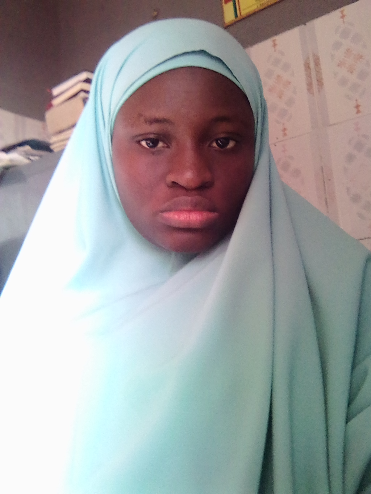

Yeay! We have got 10 Speakers for the Conference.
Meet out our Speakers
ENGR TAIWO SUMAYYAH AMOKE
CEO,LearnAway Startup. Senior Lecturer,UNILAG.
A graduate of Systems Engineering from the prestigious University of Lagos as well as a proficient web developer. She is a passionate lady who has proved that ladies can also be relevant in the tech world.She is the founder of the famous start-up "LearnAway". She is also a senior lecturer in the department of systems engineering,University of Lagos Nigeria.

ALHAJI SULAIMON OLUWATOYIN ABOU-NOLLAH
Chief Imam of Lagos
He is the first graduate to emerge as the cheif Imam of Lagos. A graduate of electrical electronics engineering, from the prestigious University of Ilorin is presently, a principal Electrical Engineer in grade 12 officer, of the Lagos State Civil Service and one of the brains behind the successes of Governor Ambode's "Light Up Lagos" project.

BARR FIRDAUS AMASA (SAN)
Lawyer, Senior Advocate of Nigeria (SAN)
An history maker of her time, she is not only a barrister per excellence, her dedication to her religion can not be over emphasized.Perhaps that explains the numerous feat she has made. Her eloquency would sure daze you as she speaks at the conference.